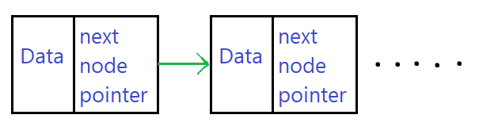
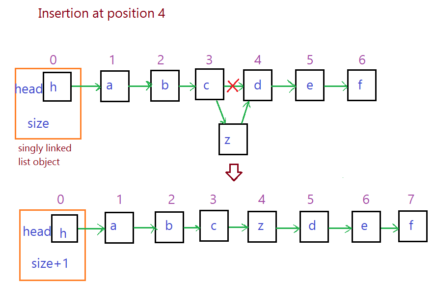
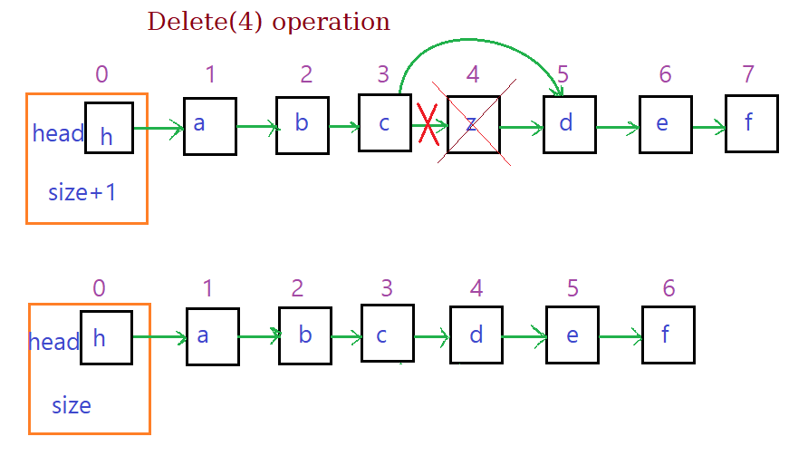

- It is a linear data structure made from chain of node objects.
- Each node has two attributes data and pointer to the next node in the list.

- The list object has the node representing head of the list and size of list.
Important Functions
-
Add
Inserts the data at the head of singly linked list.
- Make node with Data and the next pointer pointing to the head of the list.
- Set the head of the list as the new node created.
- Increment the size.
-
Find(Data)
Returns the position of node containing the Data if exists else returns -1
- We traverse from the head linearly using the next pointer.
- If the a node containing the Data is encountered then return the index.
- If null is reached then return -1.
-
remove(Data)
Deletes the node containing the Data.
- Find the node containing data by linear search.
- Set the next pointer of previous node to the node next to the Data node.
- Decrement the size.
-
Insert(poisiton, data)
Inserts the a new node containing the data at given poisiton.
- Throw error if index is out of bound.
- Create a new node containing data.
- Travel using next pointers untill the node before the position of insertion is reached.
- Point the next to the node at position.
- Next of previous to the new node.
- Increment the size.

-
Delete(position)
Delete the node at given position.
- Throw error if index is out of bound.
- Travel to the node just before the position node.
- point the next pointer of it to the node next the poisition node.
- Declare the position node as null. Though not necessary, since it will be
collected by garbage collector (does not have any pointer to it).
- Decrement the size.

-
get(i)
Returns the data in the ith node.
- Throw error if index out of bound.
- Travel from head till the ith node, return node data.
Code